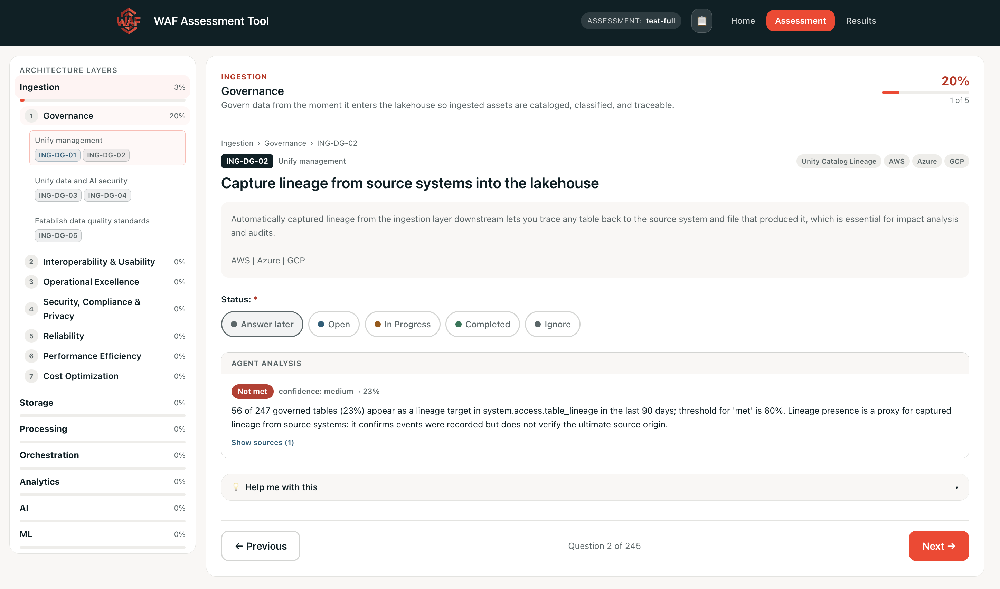

Assess your lakehouse against the Well-Architected Framework.
A structured tool for running Databricks WAF assessments — score every pillar across every architecture layer, let automated agents draft answers straight from your workspace signals, and turn the results into a prioritized backlog.
The Well-Architected Framework, made actionable.
The Databricks Well-Architected Framework defines seven pillars of a healthy lakehouse. This tool turns them into a guided assessment: for each architecture layer you work through the pillar questions, mark where you stand, capture notes, and watch a score roll up per pillar, per layer, and overall.
It runs as a Databricks App, so assessments are stored in your workspace and shared across your team — and each layer's agent can read workspace signals to answer questions for you, with a human always in the loop.

Everything you need to run an assessment
From guided questions to automated evidence-gathering agents and a ready-to-work backlog.
Seven pillars, seven layers
Every WAF pillar is evaluated within every architecture layer, with the questions reworded for each step — 5 questions per pillar, per layer.
Per-layer agents
Each layer's agent answers questions from workspace signals — system tables, Unity Catalog metadata, job and pipeline config — with a verdict, confidence, and rationale.
Bring your own docs
Upload architecture documentation — design docs and diagrams (PDF, Markdown, Word, images) — and the layer agents weigh it alongside workspace signals when they answer.
Transparent scoring
Answers turn into points and roll up into a score with a pillar-by-pillar and layer-by-layer breakdown. See how it's measured →
Statuses & notes
Mark each question Answer later, Open, In Progress, Completed, or Ignore, and attach an annotation to capture context as you go.
Human in the loop
Agents draft answers you can inspect; you review the evidence, adjust, and decide the final status. Questions without a check simply defer to your review.
Prioritized backlog
A backlog agent turns a finished assessment into a ranked implementation roadmap of tasks by complexity — shown on Results and in the export.
PDF & JSON export
Export an assessment as a shareable PDF (score, breakdown, and backlog) or as JSON to move it between workspaces.
Re-run any time
Re-run an agent to refresh its findings as your workspace changes, then re-review what moved.
Guidance built in
Each question links to the relevant Databricks documentation, so the fix is one click from the finding.
Seven pillars, across seven layers
Every pillar is assessed within each architecture layer, so a gap shows up exactly where it lives — not as a single average.
Choose which layers are in scope when you create the assessment — the score only counts what you selected.
How it's measured
Scoring is deterministic and fully transparent — every point on the page traces back to an answer you can see.
Each answer is worth points
Pick a status per question. Its status decides both the points it earns and whether it counts as answered.
| Status | Counts as answered | Points |
|---|---|---|
| Answer later | No — the default | 0 |
| Open | Yes | 1 |
| In Progress | Yes | 2 |
| Completed | Yes | 3 |
| Ignore | Yes — for out-of-scope questions | 0 |
Two numbers on the Results tab
The score tells you how far along you are; completion tells you how much you've answered.
Points roll up the same way at every level:
Results also regroups each pillar's questions by WAF principle and ranks them highest-scoring first, so your strengths and gaps are easy to read at a glance.
Agents that answer from your workspace
Each architecture layer can have an agent that gathers evidence and drafts answers — you stay the decision-maker.
Evidence, not guesswork
A layer's agent reads workspace signals — system tables, Unity Catalog metadata, job and pipeline configuration — plus any architecture documentation you upload (design docs and diagrams), and, for each question it can judge, drafts a verdict with a confidence score and a rationale you can open and inspect. Its verdict maps onto the same statuses you'd pick yourself, and is coloured the same way:
Unknown means the agent had no signal or no check for that question — distinct from choosing to answer it later. You review the evidence, adjust, and set the final status; re-run the agent whenever your workspace changes.
The backlog agent
Separately, a results-level agent turns a whole assessment into a prioritized implementation backlog — a ranked roadmap of tasks weighed by impact and complexity.
It appears on the Results page and travels with the exported PDF, so the assessment ends with a concrete list of what to do next.
Agents run only in the deployed Databricks App, using its service principal — no workspace data leaves your account.
Get started
Deploy it as a Databricks App, then run your first assessment.
Deploy the app
Build the frontend, then deploy the bundle to a serverless-enabled workspace with access to Apps, Lakebase, and AI Gateway. Full steps are in the README.
Create an assessment
Click Start New Assessment, name it, pick the architecture layers in scope, and set a cloud provider.
Answer & review
Work through each pillar's questions — or let an agent draft them — capture notes, and review the evidence to set each status.
Score & plan
Open the Results tab for your score and breakdown, generate the prioritized backlog, and export a PDF to share.